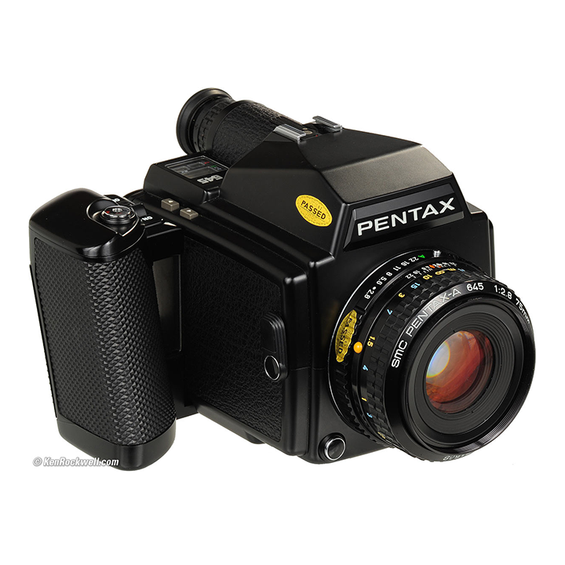
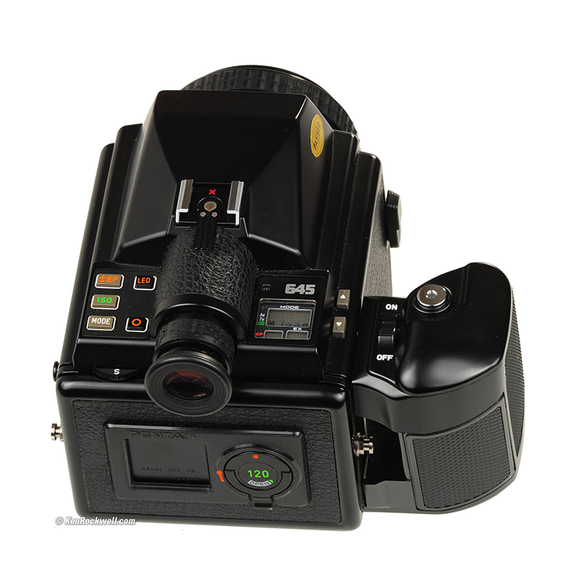
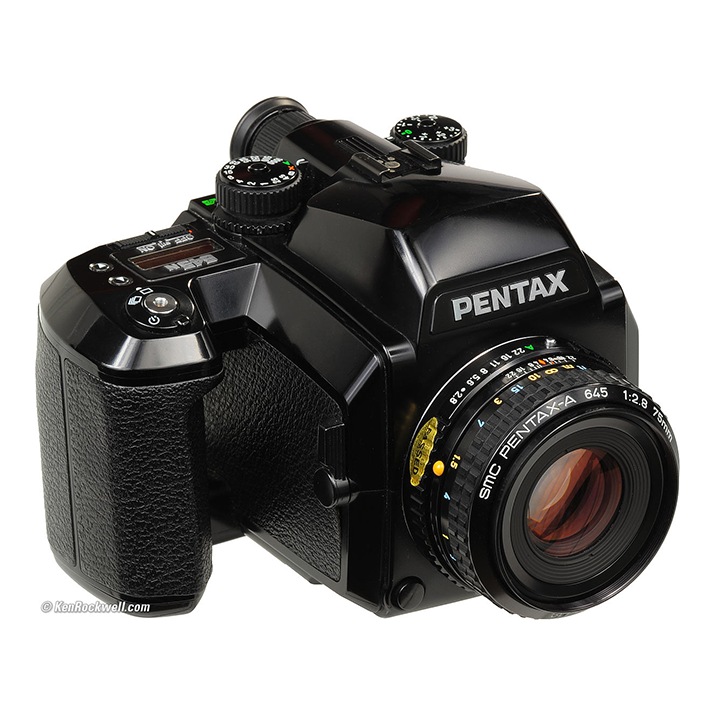
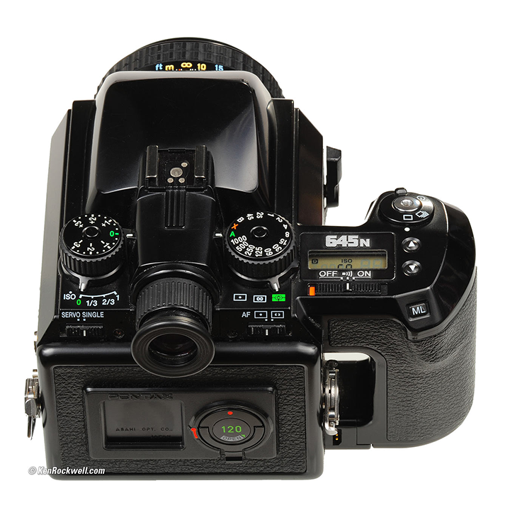
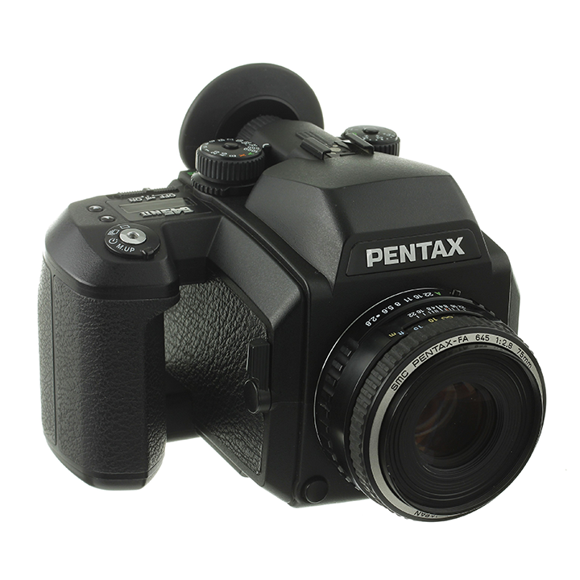
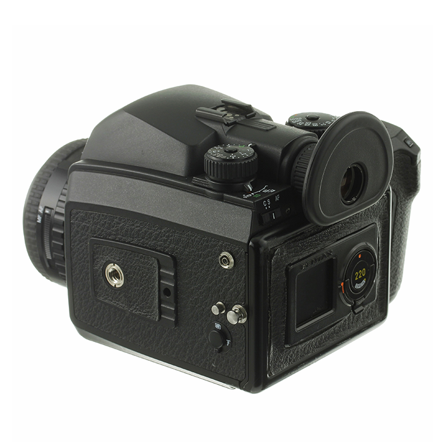
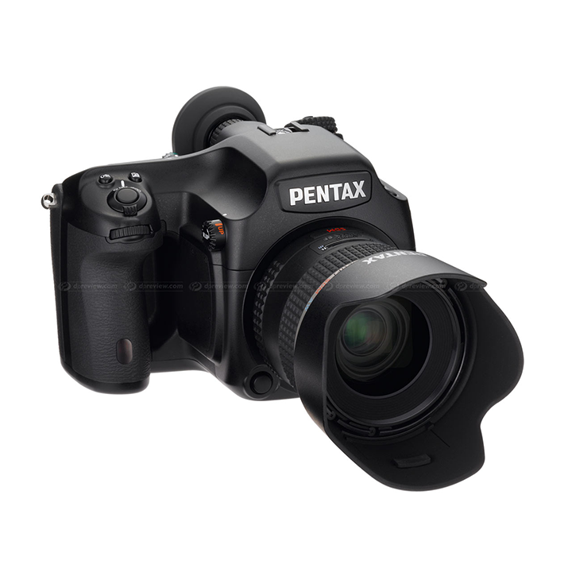
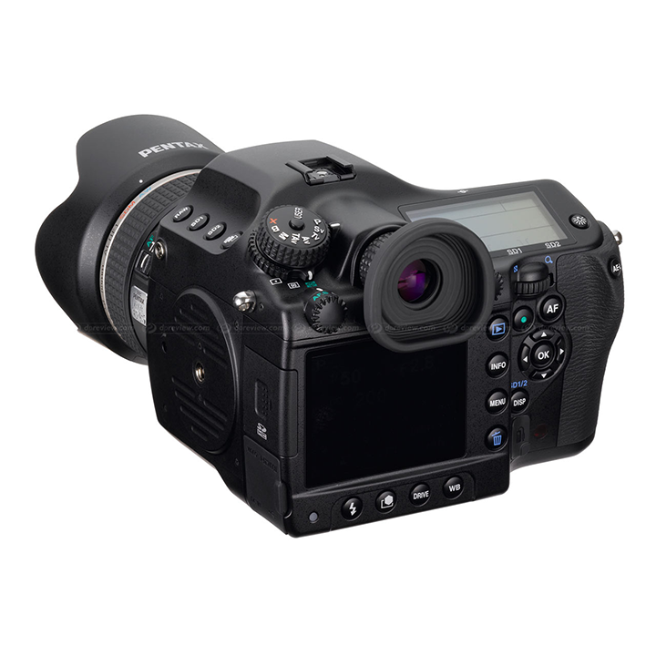
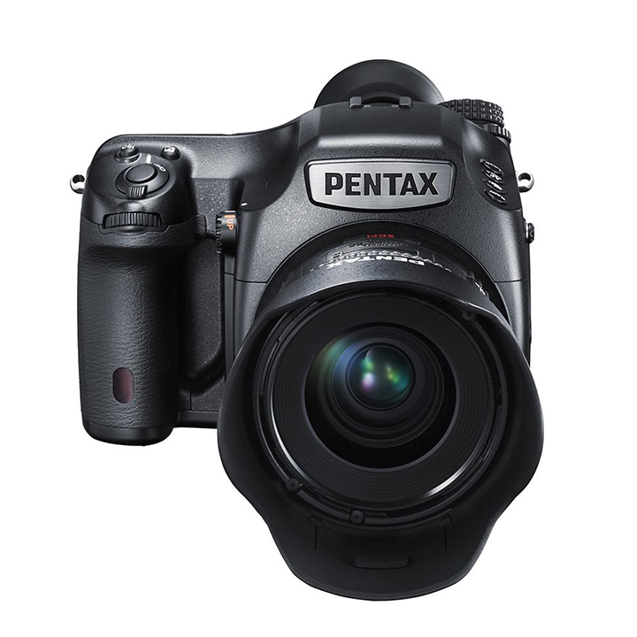
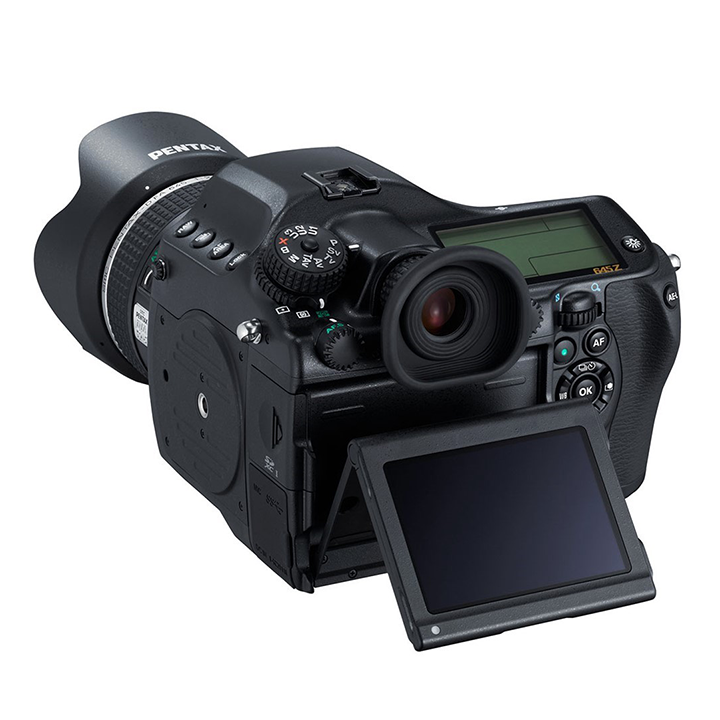

Pentax 645 is a series of medium format SLRs. The original Pentax 645 came out in 1984, it captured images in a 6 x 4.5cm format (hence the name) on 120 or 220 film. There are currently 5 models in the Pentax 645 family. The 645N introduced autofocus to the series, together with new autofocus lenses. The 645N also had more conventional dials on top compared to the 80s style buttons on the original 645. The switch from film to digital happened with the Pentax 645D, released in 2010. The digital models, 645D and 645Z have a slightly smaller sensor compared to the 6 x 4.5cm imaging plane in the film models. The digital 645 bodies have a crop factor of 0.79 (compared to "full frame") while the film bodies have a 0.62 crop factor. All the models use the same Pentax 645 mount with a flange distance of 70.87 mm.
| Model | 645 | 645N | 645NII | 645D | 645Z |
|---|---|---|---|---|---|
| Photos |   |
  |
  |
  |
  |
| Year Introduced | 1984 | 1997 | 2001 | 2010 | 2014 |
| Film/Digital | Film | Film | Film | Digital | Digital |
| Film/Sensor Size | 60 x 45mm | 60 x 45mm | 60 x 45mm | 44 x 33mm | 44 x 33mm |
| Resolution | - | - | - | 40 Megapixels | 51 Megapixels |
| ISO Range | 6–6400 | 12–6400 | 12–6400 | 100–1600 | 100–204800 |
| Shutter | 1/1000 to 15 seconds, bulb | 1/1000 to 4 seconds, bulb | 1/1000 to 6 seconds, bulb | 1/4000 to 30 seconds, bulb | 1/4000 to 30 seconds, bulb |
| Autofocus | No | Yes (3 points) | Yes (3 points) | Yes (11 points) | Yes (27 points) |
| Viewfinder | 0.75x magnification, 92% coverage | 0.75x magnification, 92% coverage | 0.75x magnification, 92% coverage | 0.85x magnification, 98% coverage | 0.85x magnification, 98% coverage |
| Weight | 1320 g | 1280 g | 1280 g | 1480 g | 1550 g |
| Power | 6 x AA | 6 x AA | 6 x AA | 800 shots CIPA | 650 shots CIPA |
The Pentax 645N and 645NII are very similar cameras. The 645NII is essentially the 645N with an upgraded mirror mechanism that swings more smoothly and silently, it also has a mirror lock-up mechanism to minimize camera shake. Another addition is the 10 custom function settings to fine tune the shooting modes. The 645NII also has on-the-film data imprinting with up to 17 different types of data.